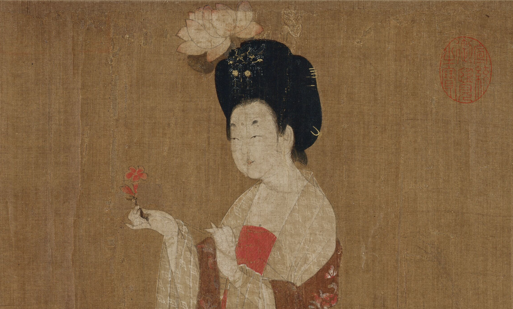
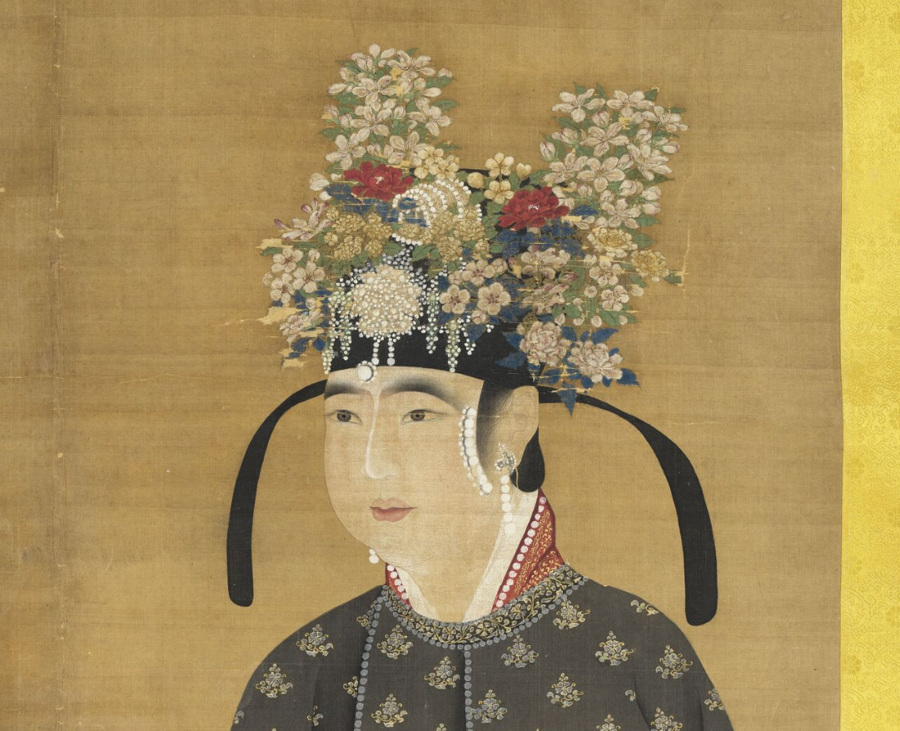
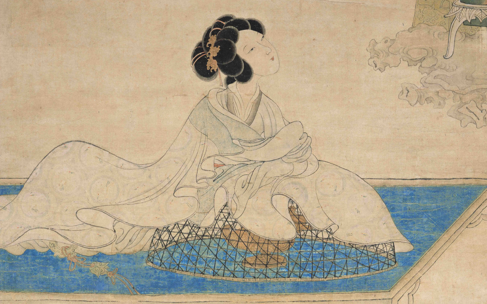
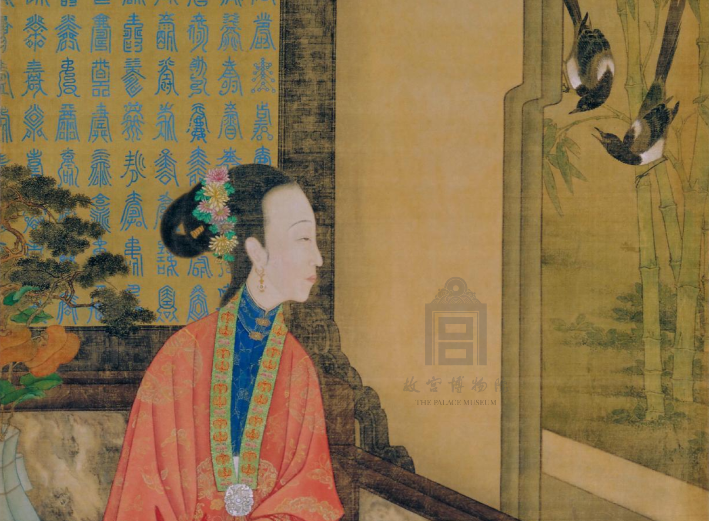

发展历史

起源
秦朝《中华古今注》中记载，在秦始皇时期，妃嫔们头上"插五色通草苏朵子"。这表明秦朝时期已经有了类似绒花的装饰品，虽然其材质和制作工艺可能与后来的绒花有所不同，但可以看作是绒花的早期雏形。
发展
秦朝 · 早期雏形
《中华古今注》记载，秦始皇时期妃嫔"插五色通草苏朵子"——这是绒花的早期雏形，材质（通草）与工艺虽简陋，但已具备"装饰头部"的核心功能。
唐朝 · 宫廷流行
唐代绒花工艺形成，作为宫廷饰品流行，据《唐六典》记载，当时已有专内制作绒花的工匠，称为"绒作"。唐中宗李显常于春日取"彩花"赐予嫔妃，武帝时期绒花被列为皇家贡品。

点击图片查看大图 · 《簪花仕女图》局部
宋朝 · 民俗化萌芽
宋代民俗化萌芽随着市民文化兴起，绒花从宫廷走向民间，开始用于端午、元宵等节日。《东京梦华录》中记载汴京街头随处可见簪花男子。

点击图片查看大图 · 《宋仁宗后坐像》局部
明朝 · 作坊规模化
明代南京云锦业兴盛，南京绒花有了专门的生产作坊，规模较为可观。扬州绒花也有了新的发展变化，品种极为丰富。

点击图片查看大图 · 《斜倚熏笼图轴》局部
清朝 · 鼎盛与精致
清代绒花生产达到鼎盛期，官府设立专内的绒花作坊和店铺，康熙、乾隆时期，南京绒花作为贡品进奉朝廷，其产品远销各地。

点击图片查看大图 · 《倚榻观鹊》局部
近现代 · 传承与新生
民国因战乱衰落;新中国成立后"南京绒花工艺社"恢复技艺。2008年入选国家级非遗,现代工匠融合传统与设计。
点击图片查看大图 · 《延禧攻略》剧照